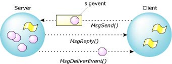

6.2. Доставка событий |
 |
 |
#include <sys/neutrino.h>
MsgDeliverEvent (int rcvid, const struct sigevent* ev);
Направляет событие по каналу от сервера к клиенту.
- Параметры:
- rcvid идентификатор ранее принятого сообщения
- ev указатель на структуру с описанием события
Распараллеливание сервера и клиента
